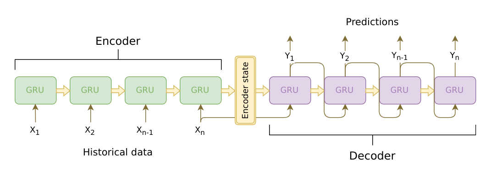
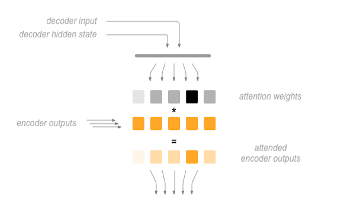

备注
点击此处下载完整示例代码
虚拟现实翻译教程
创建于：2025 年 4 月 1 日 | 最后更新：2025 年 4 月 1 日 | 最后验证：2024 年 11 月 5 日
作者：Matthew Inkawhich
在本教程中，我们将探讨循环序列到序列模型的一个有趣且实用的用例。我们将使用康奈尔电影对话语料库中的电影剧本来训练一个简单的聊天机器人。
对话式模型是人工智能研究的热门话题。聊天机器人可以应用于各种场景，包括客户服务应用和在线帮助台。这些机器人通常由基于检索的模型驱动，对特定形式的提问输出预定义的响应。在像公司 IT 帮助台这样高度受限的领域，这些模型可能足够用，但它们不足以应对更广泛的应用场景。教会机器在多个领域与人类进行有意义的对话是一个尚未解决的科研问题。最近，深度学习的兴起使得像谷歌的神经对话模型这样的强大生成模型成为可能，这标志着多领域生成对话模型迈出了重要一步。在本教程中，我们将使用 PyTorch 实现这类模型。

> hello?
Bot: hello .
> where am I?
Bot: you re in a hospital .
> who are you?
Bot: i m a lawyer .
> how are you doing?
Bot: i m fine .
> are you my friend?
Bot: no .
> you're under arrest
Bot: i m trying to help you !
> i'm just kidding
Bot: i m sorry .
> where are you from?
Bot: san francisco .
> it's time for me to leave
Bot: i know .
> goodbye
Bot: goodbye .
教程亮点
处理和预处理 Cornell 电影对话语料库数据集
实现具有 Luong 注意力机制的序列到序列模型
使用小批量联合训练编码器和解码器模型
实现贪婪搜索解码模块
与训练好的聊天机器人交互
致谢
本教程借鉴了以下来源的代码：
吴元奎的 PyTorch 聊天机器人实现：https://github.com/ywk991112/pytorch-chatbot
Sean Robertson 的实用 PyTorch seq2seq-translation 示例：https://github.com/spro/practical-pytorch/tree/master/seq2seq-translation
FloydHub 康奈尔电影语料库预处理代码：https://github.com/floydhub/textutil-preprocess-cornell-movie-corpus
准备工作 §
要开始，请下载 Movie-Dialogs Corpus 的 zip 文件。
# and put in a ``data/`` directory under the current directory.
#
# After that, let’s import some necessities.
#
import torch
from torch.jit import script, trace
import torch.nn as nn
from torch import optim
import torch.nn.functional as F
import csv
import random
import re
import os
import unicodedata
import codecs
from io import open
import itertools
import math
import json
# If the current `accelerator <https://pytorch.org/docs/stable/torch.html#accelerators>`__ is available,
# we will use it. Otherwise, we use the CPU.
device = torch.accelerator.current_accelerator().type if torch.accelerator.is_available() else "cpu"
print(f"Using {device} device")
加载与预处理数据
下一步是将我们的数据文件重新格式化，并将数据加载到我们可以工作的结构中。
Cornell Movie-Dialogs Corpus 是一个丰富的电影角色对话数据集：
22,057,9 个电影角色对之间的对话交流
来自 617 部电影的 9,035 个角色
总共 304,713 条话语
该数据集规模庞大且多样化，语言正式程度、时代、情感等差异很大。我们希望这种多样性使我们的模型能够对多种形式的输入和查询具有鲁棒性。
首先，我们将查看一些数据文件中的行，以查看原始格式。
corpus_name = "movie-corpus"
corpus = os.path.join("data", corpus_name)
def printLines(file, n=10):
with open(file, 'rb') as datafile:
lines = datafile.readlines()
for line in lines[:n]:
print(line)
printLines(os.path.join(corpus, "utterances.jsonl"))
创建格式化的数据文件
为了方便，我们将创建一个格式良好的数据文件，其中每行包含一个制表符分隔的查询句子和响应句子对。
以下函数有助于解析原始 utterances.jsonl 数据文件。
loadLinesAndConversations将文件每行分割成包含字段lineID、characterID和文本的字典，然后按字段conversationID、movieID将它们分组为对话。extractSentencePairs从对话中提取句子对。
# Splits each line of the file to create lines and conversations
def loadLinesAndConversations(fileName):
lines = {}
conversations = {}
with open(fileName, 'r', encoding='iso-8859-1') as f:
for line in f:
lineJson = json.loads(line)
# Extract fields for line object
lineObj = {}
lineObj["lineID"] = lineJson["id"]
lineObj["characterID"] = lineJson["speaker"]
lineObj["text"] = lineJson["text"]
lines[lineObj['lineID']] = lineObj
# Extract fields for conversation object
if lineJson["conversation_id"] not in conversations:
convObj = {}
convObj["conversationID"] = lineJson["conversation_id"]
convObj["movieID"] = lineJson["meta"]["movie_id"]
convObj["lines"] = [lineObj]
else:
convObj = conversations[lineJson["conversation_id"]]
convObj["lines"].insert(0, lineObj)
conversations[convObj["conversationID"]] = convObj
return lines, conversations
# Extracts pairs of sentences from conversations
def extractSentencePairs(conversations):
qa_pairs = []
for conversation in conversations.values():
# Iterate over all the lines of the conversation
for i in range(len(conversation["lines"]) - 1): # We ignore the last line (no answer for it)
inputLine = conversation["lines"][i]["text"].strip()
targetLine = conversation["lines"][i+1]["text"].strip()
# Filter wrong samples (if one of the lists is empty)
if inputLine and targetLine:
qa_pairs.append([inputLine, targetLine])
return qa_pairs
现在我们将调用这些函数并创建文件。我们将称之为 formatted_movie_lines.txt 。
# Define path to new file
datafile = os.path.join(corpus, "formatted_movie_lines.txt")
delimiter = '\t'
# Unescape the delimiter
delimiter = str(codecs.decode(delimiter, "unicode_escape"))
# Initialize lines dict and conversations dict
lines = {}
conversations = {}
# Load lines and conversations
print("\nProcessing corpus into lines and conversations...")
lines, conversations = loadLinesAndConversations(os.path.join(corpus, "utterances.jsonl"))
# Write new csv file
print("\nWriting newly formatted file...")
with open(datafile, 'w', encoding='utf-8') as outputfile:
writer = csv.writer(outputfile, delimiter=delimiter, lineterminator='\n')
for pair in extractSentencePairs(conversations):
writer.writerow(pair)
# Print a sample of lines
print("\nSample lines from file:")
printLines(datafile)
加载数据并裁剪数据 ¶
我们接下来的任务是创建一个词汇表并将查询/响应句子对加载到内存中。
注意，我们处理的是单词序列，这些单词序列没有隐含映射到离散数值空间。因此，我们必须创建一个映射，将我们数据集中遇到的每个唯一单词映射到一个索引值。
为了这个目的，我们定义了一个 Voc 类，该类将单词到索引的映射、索引到单词的反向映射、每个单词的计数和总单词计数保持在一个映射中。该类提供了添加单词到词汇表（ addWord ）、添加句子中的所有单词（ addSentence ）和修剪不常出现的单词（ trim ）的方法。稍后详细介绍修剪。
# Default word tokens
PAD_token = 0 # Used for padding short sentences
SOS_token = 1 # Start-of-sentence token
EOS_token = 2 # End-of-sentence token
class Voc:
def __init__(self, name):
self.name = name
self.trimmed = False
self.word2index = {}
self.word2count = {}
self.index2word = {PAD_token: "PAD", SOS_token: "SOS", EOS_token: "EOS"}
self.num_words = 3 # Count SOS, EOS, PAD
def addSentence(self, sentence):
for word in sentence.split(' '):
self.addWord(word)
def addWord(self, word):
if word not in self.word2index:
self.word2index[word] = self.num_words
self.word2count[word] = 1
self.index2word[self.num_words] = word
self.num_words += 1
else:
self.word2count[word] += 1
# Remove words below a certain count threshold
def trim(self, min_count):
if self.trimmed:
return
self.trimmed = True
keep_words = []
for k, v in self.word2count.items():
if v >= min_count:
keep_words.append(k)
print('keep_words {} / {} = {:.4f}'.format(
len(keep_words), len(self.word2index), len(keep_words) / len(self.word2index)
))
# Reinitialize dictionaries
self.word2index = {}
self.word2count = {}
self.index2word = {PAD_token: "PAD", SOS_token: "SOS", EOS_token: "EOS"}
self.num_words = 3 # Count default tokens
for word in keep_words:
self.addWord(word)
现在，我们可以组装我们的词汇表和查询/响应句子对。在我们准备好使用这些数据之前，我们必须进行一些预处理。
首先，我们必须使用 unicodeToAscii 将 Unicode 字符串转换为 ASCII。接下来，我们应该将所有字母转换为小写，并删除所有非字母字符，除了基本标点符号（ normalizeString ）。最后，为了帮助训练收敛，我们将过滤掉长度大于 MAX_LENGTH 阈值的句子（ filterPairs ）。
MAX_LENGTH = 10 # Maximum sentence length to consider
# Turn a Unicode string to plain ASCII, thanks to
# https://stackoverflow.com/a/518232/2809427
def unicodeToAscii(s):
return ''.join(
c for c in unicodedata.normalize('NFD', s)
if unicodedata.category(c) != 'Mn'
)
# Lowercase, trim, and remove non-letter characters
def normalizeString(s):
s = unicodeToAscii(s.lower().strip())
s = re.sub(r"([.!?])", r" \1", s)
s = re.sub(r"[^a-zA-Z.!?]+", r" ", s)
s = re.sub(r"\s+", r" ", s).strip()
return s
# Read query/response pairs and return a voc object
def readVocs(datafile, corpus_name):
print("Reading lines...")
# Read the file and split into lines
lines = open(datafile, encoding='utf-8').\
read().strip().split('\n')
# Split every line into pairs and normalize
pairs = [[normalizeString(s) for s in l.split('\t')] for l in lines]
voc = Voc(corpus_name)
return voc, pairs
# Returns True if both sentences in a pair 'p' are under the MAX_LENGTH threshold
def filterPair(p):
# Input sequences need to preserve the last word for EOS token
return len(p[0].split(' ')) < MAX_LENGTH and len(p[1].split(' ')) < MAX_LENGTH
# Filter pairs using the ``filterPair`` condition
def filterPairs(pairs):
return [pair for pair in pairs if filterPair(pair)]
# Using the functions defined above, return a populated voc object and pairs list
def loadPrepareData(corpus, corpus_name, datafile, save_dir):
print("Start preparing training data ...")
voc, pairs = readVocs(datafile, corpus_name)
print("Read {!s} sentence pairs".format(len(pairs)))
pairs = filterPairs(pairs)
print("Trimmed to {!s} sentence pairs".format(len(pairs)))
print("Counting words...")
for pair in pairs:
voc.addSentence(pair[0])
voc.addSentence(pair[1])
print("Counted words:", voc.num_words)
return voc, pairs
# Load/Assemble voc and pairs
save_dir = os.path.join("data", "save")
voc, pairs = loadPrepareData(corpus, corpus_name, datafile, save_dir)
# Print some pairs to validate
print("\npairs:")
for pair in pairs[:10]:
print(pair)
另一种在训练过程中实现更快收敛的有益策略是从我们的词汇表中删除很少使用的单词。减少特征空间也将减轻模型必须学习的近似函数的难度。我们将分两步进行此操作：
使用
voc.trim函数删除低于MIN_COUNT阈值的单词。过滤掉包含已删除单词的配对。
MIN_COUNT = 3 # Minimum word count threshold for trimming
def trimRareWords(voc, pairs, MIN_COUNT):
# Trim words used under the MIN_COUNT from the voc
voc.trim(MIN_COUNT)
# Filter out pairs with trimmed words
keep_pairs = []
for pair in pairs:
input_sentence = pair[0]
output_sentence = pair[1]
keep_input = True
keep_output = True
# Check input sentence
for word in input_sentence.split(' '):
if word not in voc.word2index:
keep_input = False
break
# Check output sentence
for word in output_sentence.split(' '):
if word not in voc.word2index:
keep_output = False
break
# Only keep pairs that do not contain trimmed word(s) in their input or output sentence
if keep_input and keep_output:
keep_pairs.append(pair)
print("Trimmed from {} pairs to {}, {:.4f} of total".format(len(pairs), len(keep_pairs), len(keep_pairs) / len(pairs)))
return keep_pairs
# Trim voc and pairs
pairs = trimRareWords(voc, pairs, MIN_COUNT)
为模型准备数据
尽管我们已经投入了大量精力，将我们的数据准备和整理成漂亮的词汇对象和句子对列表，但我们的模型最终仍期望输入的是数值化的 torch 张量。为模型准备处理后的数据的一种方法可以在 seq2seq 翻译教程中找到。在该教程中，我们使用批大小为 1，这意味着我们只需将句子对中的单词转换为词汇表中的对应索引，并将其输入到模型中。
然而，如果您想加快训练速度或想利用 GPU 的并行化能力，您将需要使用小批量进行训练。
使用小批量还意味着我们必须注意批处理中句子长度的变化。为了在同一批处理中容纳不同大小的句子，我们将我们的批处理输入张量形状设置为（max_length，batch_size），其中长度小于 max_length 的句子在 EOS_token 后进行零填充。
如果我们简单地将我们的英语句子转换为通过将单词转换为它们的索引（ indexesFromSentence ）并进行零填充的张量，那么我们的张量将具有形状（batch_size，max_length），并且索引第一维将返回所有时间步的全序列。然而，我们需要能够沿着时间索引我们的批次，并跨批次中的所有序列。因此，我们将输入批次的形状转置为（max_length，batch_size），这样跨第一维的索引将返回批次中所有句子的时间步。我们在 zeroPadding 函数中隐式地处理这种转置。

inputVar 函数处理将句子转换为张量的过程，最终创建一个正确形状的零填充张量。它还返回一个张量 lengths ，该张量将传递给我们的解码器。对于批次中的每个序列。
outputVar 函数与 inputVar 执行类似的功能，但它返回的不是 lengths 张量，而是一个二进制掩码张量和最大目标句子长度。二进制掩码张量与输出目标张量具有相同的形状，但所有 PAD_token 元素都是 0，其余都是 1。
使用上述函数简单地获取一些对并返回输入和目标张量。
def indexesFromSentence(voc, sentence):
return [voc.word2index[word] for word in sentence.split(' ')] + [EOS_token]
def zeroPadding(l, fillvalue=PAD_token):
return list(itertools.zip_longest(*l, fillvalue=fillvalue))
def binaryMatrix(l, value=PAD_token):
m = []
for i, seq in enumerate(l):
m.append([])
for token in seq:
if token == PAD_token:
m[i].append(0)
else:
m[i].append(1)
return m
# Returns padded input sequence tensor and lengths
def inputVar(l, voc):
indexes_batch = [indexesFromSentence(voc, sentence) for sentence in l]
lengths = torch.tensor([len(indexes) for indexes in indexes_batch])
padList = zeroPadding(indexes_batch)
padVar = torch.LongTensor(padList)
return padVar, lengths
# Returns padded target sequence tensor, padding mask, and max target length
def outputVar(l, voc):
indexes_batch = [indexesFromSentence(voc, sentence) for sentence in l]
max_target_len = max([len(indexes) for indexes in indexes_batch])
padList = zeroPadding(indexes_batch)
mask = binaryMatrix(padList)
mask = torch.BoolTensor(mask)
padVar = torch.LongTensor(padList)
return padVar, mask, max_target_len
# Returns all items for a given batch of pairs
def batch2TrainData(voc, pair_batch):
pair_batch.sort(key=lambda x: len(x[0].split(" ")), reverse=True)
input_batch, output_batch = [], []
for pair in pair_batch:
input_batch.append(pair[0])
output_batch.append(pair[1])
inp, lengths = inputVar(input_batch, voc)
output, mask, max_target_len = outputVar(output_batch, voc)
return inp, lengths, output, mask, max_target_len
# Example for validation
small_batch_size = 5
batches = batch2TrainData(voc, [random.choice(pairs) for _ in range(small_batch_size)])
input_variable, lengths, target_variable, mask, max_target_len = batches
print("input_variable:", input_variable)
print("lengths:", lengths)
print("target_variable:", target_variable)
print("mask:", mask)
print("max_target_len:", max_target_len)
定义模型
Seq2Seq 模型
我们聊天机器人的大脑是一个序列到序列（seq2seq）模型。seq2seq 模型的目标是接受一个可变长度的序列作为输入，并使用固定大小的模型返回一个可变长度的序列。
Sutskever 等人发现，通过使用两个独立的循环神经网络一起，我们可以完成这个任务。其中一个 RNN 充当编码器，将可变长度的输入序列编码为固定长度的上下文向量。从理论上讲，这个上下文向量（RNN 的最终隐藏层）将包含关于输入到机器人的查询句子的语义信息。第二个 RNN 是解码器，它接收一个输入单词和上下文向量，并返回序列中的下一个单词的猜测以及用于下一个迭代的隐藏状态。

图片来源：https://jeddy92.github.io/JEddy92.github.io/ts_seq2seq_intro/
编码器
编码器 RNN 逐个标记（例如单词）遍历输入句子，在每个时间步输出一个“输出”向量和“隐藏状态”向量。隐藏状态向量随后传递到下一个时间步，而输出向量被记录。编码器将它在序列中每个点看到的上下文转换为高维空间中的一系列点，解码器将使用这些点为给定任务生成有意义的输出。
我们编码器的心脏是一个多层门控循环单元（GRU），由 Cho 等人于 2014 年发明。我们将使用双向变体的 GRU，这意味着实际上有两个独立的 RNN：一个按正常顺序接收输入序列，另一个按反向顺序接收输入序列。每个网络的输出在每个时间步都相加。使用双向 GRU 将使我们能够编码过去和未来的上下文。
双向 RNN：

图片来源：https://colah.github.io/posts/2015-09-NN-Types-FP/
注意，使用 embedding 层将我们的词索引编码到任意大小的特征空间中。对于我们的模型，这一层将每个词映射到大小为 hidden_size 的特征空间。在训练过程中，这些值应该编码相似意义词之间的语义相似性。
最后，如果将填充的序列批次传递给 RNN 模块，我们必须使用 nn.utils.rnn.pack_padded_sequence 和 nn.utils.rnn.pad_packed_sequence 分别打包和解包 RNN 传递周围的填充。
计算图：
将词索引转换为嵌入。
打包填充的序列批次以供 RNN 模块使用。
通过 GRU 进行前向传播
解包填充
求双向 GRU 输出之和
返回输出和最终隐藏状态
输入：
input_seq: 输入句子批次；形状=(最大长度, 批处理大小)input_lengths: 每个句子长度的列表，对应批次中的每个句子；形状=(批处理大小)hidden: 隐藏状态；形状=(层数 x 方向数, 批处理大小, 隐藏大小)
输出：
outputs: 从 GRU 的最后一层隐藏层输出的特征（双向输出的总和）；形状=(max_length, batch_size, hidden_size)hidden: 更新的 GRU 隐藏状态；形状=(n_layers x num_directions, batch_size, hidden_size)
class EncoderRNN(nn.Module):
def __init__(self, hidden_size, embedding, n_layers=1, dropout=0):
super(EncoderRNN, self).__init__()
self.n_layers = n_layers
self.hidden_size = hidden_size
self.embedding = embedding
# Initialize GRU; the input_size and hidden_size parameters are both set to 'hidden_size'
# because our input size is a word embedding with number of features == hidden_size
self.gru = nn.GRU(hidden_size, hidden_size, n_layers,
dropout=(0 if n_layers == 1 else dropout), bidirectional=True)
def forward(self, input_seq, input_lengths, hidden=None):
# Convert word indexes to embeddings
embedded = self.embedding(input_seq)
# Pack padded batch of sequences for RNN module
packed = nn.utils.rnn.pack_padded_sequence(embedded, input_lengths)
# Forward pass through GRU
outputs, hidden = self.gru(packed, hidden)
# Unpack padding
outputs, _ = nn.utils.rnn.pad_packed_sequence(outputs)
# Sum bidirectional GRU outputs
outputs = outputs[:, :, :self.hidden_size] + outputs[:, : ,self.hidden_size:]
# Return output and final hidden state
return outputs, hidden
解码器 §
解码器 RNN 以逐个标记的方式生成响应句子。它使用编码器的上下文向量和内部隐藏状态来生成序列中的下一个单词。它继续生成单词，直到输出 EOS_token，表示句子的结束。常见的 seq2seq 解码器问题是，如果我们完全依赖于上下文向量来编码整个输入序列的意义，很可能会丢失信息。这尤其是在处理长输入序列时，极大地限制了解码器的能力。
为了解决这个问题，Bahdanau 等人创建了一种“注意力机制”，允许解码器关注输入序列的某些部分，而不是在每一步都使用整个固定的上下文。
从高层次来看，注意力是通过解码器的当前隐藏状态和编码器的输出来计算的。输出注意力权重与输入序列具有相同的形状，这使得我们可以将它们与编码器输出相乘，得到一个加权求和，这表明了需要关注编码器输出的部分。Sean Robertson 的图解描述得非常好：

Luong 等人基于 Bahdanau 等人开创性的工作，提出了“全局注意力”。其关键区别在于，“全局注意力”考虑了编码器的所有隐藏状态，而 Bahdanau 等人的“局部注意力”仅考虑当前时间步的编码器隐藏状态。另一个区别是，“全局注意力”仅使用当前时间步的解码器隐藏状态来计算注意力权重或能量。而 Bahdanau 等人的注意力计算需要知道解码器前一个时间步的状态。此外，Luong 等人还提供了各种计算编码器输出和解码器输出之间注意力能量（称为“得分函数”）的方法：
{kind=link}
其中 \(h_t\) = 当前目标解码器状态，\(\bar{h}_s\) = 所有编码器状态。
总体而言，全局注意力机制可以用以下图示来概括。请注意，我们将“注意力层”作为一个单独的模块实现，称为 nn.Module ，该模块的输出是一个形状为（batch_size，1，max_length）的 softmax 归一化权重张量。

# Luong attention layer
class Attn(nn.Module):
def __init__(self, method, hidden_size):
super(Attn, self).__init__()
self.method = method
if self.method not in ['dot', 'general', 'concat']:
raise ValueError(self.method, "is not an appropriate attention method.")
self.hidden_size = hidden_size
if self.method == 'general':
self.attn = nn.Linear(self.hidden_size, hidden_size)
elif self.method == 'concat':
self.attn = nn.Linear(self.hidden_size * 2, hidden_size)
self.v = nn.Parameter(torch.FloatTensor(hidden_size))
def dot_score(self, hidden, encoder_output):
return torch.sum(hidden * encoder_output, dim=2)
def general_score(self, hidden, encoder_output):
energy = self.attn(encoder_output)
return torch.sum(hidden * energy, dim=2)
def concat_score(self, hidden, encoder_output):
energy = self.attn(torch.cat((hidden.expand(encoder_output.size(0), -1, -1), encoder_output), 2)).tanh()
return torch.sum(self.v * energy, dim=2)
def forward(self, hidden, encoder_outputs):
# Calculate the attention weights (energies) based on the given method
if self.method == 'general':
attn_energies = self.general_score(hidden, encoder_outputs)
elif self.method == 'concat':
attn_energies = self.concat_score(hidden, encoder_outputs)
elif self.method == 'dot':
attn_energies = self.dot_score(hidden, encoder_outputs)
# Transpose max_length and batch_size dimensions
attn_energies = attn_energies.t()
# Return the softmax normalized probability scores (with added dimension)
return F.softmax(attn_energies, dim=1).unsqueeze(1)
现在我们已经定义了我们的注意力子模块，我们可以实现实际的解码器模型。对于解码器，我们将手动逐个时间步地喂入我们的批次。这意味着我们的嵌入词张量和 GRU 输出都将具有形状（1，batch_size，hidden_size）。
计算图：
获取当前输入单词的嵌入表示。
通过单向 GRU 进行前向传播。
从步骤（2）的当前 GRU 输出计算注意力权重。
将注意力权重与编码器输出相乘，以获得新的“加权求和”上下文向量。
使用 Luong 公式 5 将加权上下文向量和 GRU 输出连接起来。
使用 Luong 公式 6 预测下一个单词（不使用 softmax）。
返回输出和最终隐藏状态
输入：
input_step: 输入序列批次的单步（一个单词）；形状=(1, 批量大小)last_hidden: GRU 的最终隐藏层；形状=(层数 x 方向数, 批量大小, 隐藏层大小)encoder_outputs: 编码器模型的输出；形状=(最大长度, 批量大小, 隐藏层大小)
输出：
output: 软化归一化张量，给出解码序列中每个单词是正确下一个单词的概率；形状=(batch_size, voc.num_words)hidden: GRU 的最终隐藏状态；形状=(n_layers x num_directions, batch_size, hidden_size)
class LuongAttnDecoderRNN(nn.Module):
def __init__(self, attn_model, embedding, hidden_size, output_size, n_layers=1, dropout=0.1):
super(LuongAttnDecoderRNN, self).__init__()
# Keep for reference
self.attn_model = attn_model
self.hidden_size = hidden_size
self.output_size = output_size
self.n_layers = n_layers
self.dropout = dropout
# Define layers
self.embedding = embedding
self.embedding_dropout = nn.Dropout(dropout)
self.gru = nn.GRU(hidden_size, hidden_size, n_layers, dropout=(0 if n_layers == 1 else dropout))
self.concat = nn.Linear(hidden_size * 2, hidden_size)
self.out = nn.Linear(hidden_size, output_size)
self.attn = Attn(attn_model, hidden_size)
def forward(self, input_step, last_hidden, encoder_outputs):
# Note: we run this one step (word) at a time
# Get embedding of current input word
embedded = self.embedding(input_step)
embedded = self.embedding_dropout(embedded)
# Forward through unidirectional GRU
rnn_output, hidden = self.gru(embedded, last_hidden)
# Calculate attention weights from the current GRU output
attn_weights = self.attn(rnn_output, encoder_outputs)
# Multiply attention weights to encoder outputs to get new "weighted sum" context vector
context = attn_weights.bmm(encoder_outputs.transpose(0, 1))
# Concatenate weighted context vector and GRU output using Luong eq. 5
rnn_output = rnn_output.squeeze(0)
context = context.squeeze(1)
concat_input = torch.cat((rnn_output, context), 1)
concat_output = torch.tanh(self.concat(concat_input))
# Predict next word using Luong eq. 6
output = self.out(concat_output)
output = F.softmax(output, dim=1)
# Return output and final hidden state
return output, hidden
定义训练过程 §
掩码损失 §
由于我们处理的是填充序列的批次，因此在计算损失时不能简单地考虑张量的所有元素。我们定义 maskNLLLoss 来根据我们的解码器输出张量、目标张量和描述目标张量填充的二进制掩码张量来计算我们的损失。此损失函数计算掩码张量中对应于 1 的元素的负对数似然平均值。
def maskNLLLoss(inp, target, mask):
nTotal = mask.sum()
crossEntropy = -torch.log(torch.gather(inp, 1, target.view(-1, 1)).squeeze(1))
loss = crossEntropy.masked_select(mask).mean()
loss = loss.to(device)
return loss, nTotal.item()
单个训练迭代
train 函数包含单个训练迭代（单个输入批次）的算法。
我们将使用一些巧妙的技巧来帮助收敛：
第一个技巧是使用教师强制。这意味着在某个概率下，由
teacher_forcing_ratio设置，我们使用当前的目标词作为解码器的下一个输入，而不是使用解码器的当前猜测。这种技术充当解码器的训练轮，有助于更高效的训练。然而，教师强制可能导致推理过程中的模型不稳定，因为解码器在训练过程中可能没有足够的机会真正构建自己的输出序列。因此，我们必须注意如何设置teacher_forcing_ratio，不要被快速收敛所迷惑。我们实施的第二个技巧是梯度裁剪。这是一种常用的技术，用于对抗“梯度爆炸”问题。本质上，通过裁剪或阈值梯度到最大值，我们防止梯度呈指数增长，从而避免溢出（NaN）或超过成本函数中的陡峭悬崖。
{kind=link}
图片来源：Goodfellow 等人《深度学习》。2016 年。https://www.deeplearningbook.org/
操作序列：
将整个输入批次通过编码器进行正向传播。
将解码器输入初始化为 SOS_token，并将隐藏状态设置为编码器的最终隐藏状态。
将输入批次序列逐个时间步通过解码器进行正向传播。
如果使用教师强制：将下一个解码器输入设置为当前目标；否则：将下一个解码器输入设置为当前解码器输出。
计算并累积损失。
执行反向传播。
剪裁梯度。
更新编码器和解码器模型参数。
备注
PyTorch 的 RNN 模块（ RNN ， LSTM ， GRU ）可以像任何其他非循环层一样使用，只需将整个输入序列（或序列批次）传递给它们。我们在 encoder 中就是这样使用 GRU 层的。实际上，在底层，有一个迭代过程，逐个时间步计算隐藏状态。或者，您可以一次运行一个时间步的这些模块。在这种情况下，我们在训练过程中手动遍历序列，就像我们必须为 decoder 模型做的那样。只要您保持这些模块的正确概念模型，实现序列模型可以非常简单。
def train(input_variable, lengths, target_variable, mask, max_target_len, encoder, decoder, embedding,
encoder_optimizer, decoder_optimizer, batch_size, clip, max_length=MAX_LENGTH):
# Zero gradients
encoder_optimizer.zero_grad()
decoder_optimizer.zero_grad()
# Set device options
input_variable = input_variable.to(device)
target_variable = target_variable.to(device)
mask = mask.to(device)
# Lengths for RNN packing should always be on the CPU
lengths = lengths.to("cpu")
# Initialize variables
loss = 0
print_losses = []
n_totals = 0
# Forward pass through encoder
encoder_outputs, encoder_hidden = encoder(input_variable, lengths)
# Create initial decoder input (start with SOS tokens for each sentence)
decoder_input = torch.LongTensor([[SOS_token for _ in range(batch_size)]])
decoder_input = decoder_input.to(device)
# Set initial decoder hidden state to the encoder's final hidden state
decoder_hidden = encoder_hidden[:decoder.n_layers]
# Determine if we are using teacher forcing this iteration
use_teacher_forcing = True if random.random() < teacher_forcing_ratio else False
# Forward batch of sequences through decoder one time step at a time
if use_teacher_forcing:
for t in range(max_target_len):
decoder_output, decoder_hidden = decoder(
decoder_input, decoder_hidden, encoder_outputs
)
# Teacher forcing: next input is current target
decoder_input = target_variable[t].view(1, -1)
# Calculate and accumulate loss
mask_loss, nTotal = maskNLLLoss(decoder_output, target_variable[t], mask[t])
loss += mask_loss
print_losses.append(mask_loss.item() * nTotal)
n_totals += nTotal
else:
for t in range(max_target_len):
decoder_output, decoder_hidden = decoder(
decoder_input, decoder_hidden, encoder_outputs
)
# No teacher forcing: next input is decoder's own current output
_, topi = decoder_output.topk(1)
decoder_input = torch.LongTensor([[topi[i][0] for i in range(batch_size)]])
decoder_input = decoder_input.to(device)
# Calculate and accumulate loss
mask_loss, nTotal = maskNLLLoss(decoder_output, target_variable[t], mask[t])
loss += mask_loss
print_losses.append(mask_loss.item() * nTotal)
n_totals += nTotal
# Perform backpropagation
loss.backward()
# Clip gradients: gradients are modified in place
_ = nn.utils.clip_grad_norm_(encoder.parameters(), clip)
_ = nn.utils.clip_grad_norm_(decoder.parameters(), clip)
# Adjust model weights
encoder_optimizer.step()
decoder_optimizer.step()
return sum(print_losses) / n_totals
训练迭代
终于到了将完整训练过程与数据结合起来的时候。 trainIters 函数负责运行 n_iterations 训练，给定传递的模型、优化器、数据等。这个函数相当直观，因为我们已经通过 train 函数完成了繁重的工作。
值得注意的是，当我们保存我们的模型时，我们会保存一个包含编码器和解码器（参数） state_dicts 、优化器 state_dicts 、损失、迭代次数等的 tarball 文件。以这种方式保存模型将给我们带来最大的灵活性，在检查点。加载检查点后，我们可以使用模型参数进行推理，或者我们可以从上次停止的地方继续训练。
def trainIters(model_name, voc, pairs, encoder, decoder, encoder_optimizer, decoder_optimizer, embedding, encoder_n_layers, decoder_n_layers, save_dir, n_iteration, batch_size, print_every, save_every, clip, corpus_name, loadFilename):
# Load batches for each iteration
training_batches = [batch2TrainData(voc, [random.choice(pairs) for _ in range(batch_size)])
for _ in range(n_iteration)]
# Initializations
print('Initializing ...')
start_iteration = 1
print_loss = 0
if loadFilename:
start_iteration = checkpoint['iteration'] + 1
# Training loop
print("Training...")
for iteration in range(start_iteration, n_iteration + 1):
training_batch = training_batches[iteration - 1]
# Extract fields from batch
input_variable, lengths, target_variable, mask, max_target_len = training_batch
# Run a training iteration with batch
loss = train(input_variable, lengths, target_variable, mask, max_target_len, encoder,
decoder, embedding, encoder_optimizer, decoder_optimizer, batch_size, clip)
print_loss += loss
# Print progress
if iteration % print_every == 0:
print_loss_avg = print_loss / print_every
print("Iteration: {}; Percent complete: {:.1f}%; Average loss: {:.4f}".format(iteration, iteration / n_iteration * 100, print_loss_avg))
print_loss = 0
# Save checkpoint
if (iteration % save_every == 0):
directory = os.path.join(save_dir, model_name, corpus_name, '{}-{}_{}'.format(encoder_n_layers, decoder_n_layers, hidden_size))
if not os.path.exists(directory):
os.makedirs(directory)
torch.save({
'iteration': iteration,
'en': encoder.state_dict(),
'de': decoder.state_dict(),
'en_opt': encoder_optimizer.state_dict(),
'de_opt': decoder_optimizer.state_dict(),
'loss': loss,
'voc_dict': voc.__dict__,
'embedding': embedding.state_dict()
}, os.path.join(directory, '{}_{}.tar'.format(iteration, 'checkpoint')))
定义评估
训练好模型后，我们希望能够与机器人进行交互。首先，我们必须定义我们希望模型如何解码编码后的输入。
贪婪解码
贪婪解码是我们训练时在不使用教师强制的情况下使用的解码方法。换句话说，对于每个时间步，我们只是简单地从 decoder_output 中选择具有最高 softmax 值的单词。这种解码方法在单个时间步上是最优的。
为了方便贪婪解码操作，我们定义了一个 GreedySearchDecoder 类。当运行时，该类的对象接受一个形状为(input_seq 长度, 1)的输入序列( input_seq )，一个标量输入长度( input_length )张量，以及一个 max_length 来限制响应句子的长度。输入句子使用以下计算图进行评估：
计算图：
将输入通过编码器模型进行前向传递。
准备编码器的最终隐藏层作为解码器的第一个隐藏输入。
将解码器的第一个输入初始化为 SOS_token。
初始化张量以附加解码的单词。
- 逐个迭代解码一个单词标记：
通过解码器进行正向传播。
获取最可能的词元及其 softmax 分数。
记录词元和分数。
准备当前词元作为下一个解码器的输入。
返回单词标记和分数的集合。
class GreedySearchDecoder(nn.Module):
def __init__(self, encoder, decoder):
super(GreedySearchDecoder, self).__init__()
self.encoder = encoder
self.decoder = decoder
def forward(self, input_seq, input_length, max_length):
# Forward input through encoder model
encoder_outputs, encoder_hidden = self.encoder(input_seq, input_length)
# Prepare encoder's final hidden layer to be first hidden input to the decoder
decoder_hidden = encoder_hidden[:self.decoder.n_layers]
# Initialize decoder input with SOS_token
decoder_input = torch.ones(1, 1, device=device, dtype=torch.long) * SOS_token
# Initialize tensors to append decoded words to
all_tokens = torch.zeros([0], device=device, dtype=torch.long)
all_scores = torch.zeros([0], device=device)
# Iteratively decode one word token at a time
for _ in range(max_length):
# Forward pass through decoder
decoder_output, decoder_hidden = self.decoder(decoder_input, decoder_hidden, encoder_outputs)
# Obtain most likely word token and its softmax score
decoder_scores, decoder_input = torch.max(decoder_output, dim=1)
# Record token and score
all_tokens = torch.cat((all_tokens, decoder_input), dim=0)
all_scores = torch.cat((all_scores, decoder_scores), dim=0)
# Prepare current token to be next decoder input (add a dimension)
decoder_input = torch.unsqueeze(decoder_input, 0)
# Return collections of word tokens and scores
return all_tokens, all_scores
评估我的文本 ¶
现在我们已经定义了我们的解码方法，我们可以编写用于评估字符串输入句子的函数。 evaluate 函数管理处理输入句子的底层过程。我们首先将句子格式化为一个包含单词索引的输入批次，batch_size==1。我们通过将句子的单词转换为它们对应的索引，并转置维度来准备张量以供我们的模型使用。我们还创建了一个包含输入句子长度的 lengths 张量。在这种情况下， lengths 是标量，因为我们一次只评估一个句子（batch_size==1）。接下来，我们使用我们的 GreedySearchDecoder 对象（ searcher ）获取解码的响应句子张量。最后，我们将响应的索引转换为单词，并返回解码单词的列表。
evaluateInput 作为我们聊天机器人的用户界面。当调用时，将弹出一个输入文本框，我们可以输入我们的查询句子。输入我们的输入句子并按 Enter 键后，我们的文本将按照我们的训练数据进行规范化，最终被喂给 evaluate 函数以获得解码后的输出句子。我们重复这个过程，这样我们就可以与我们的机器人保持聊天，直到我们输入“q”或“quit”。
最后，如果输入的句子中包含不在词汇表中的单词，我们将优雅地处理这种情况，打印错误消息并提示用户输入另一个句子。
def evaluate(encoder, decoder, searcher, voc, sentence, max_length=MAX_LENGTH):
### Format input sentence as a batch
# words -> indexes
indexes_batch = [indexesFromSentence(voc, sentence)]
# Create lengths tensor
lengths = torch.tensor([len(indexes) for indexes in indexes_batch])
# Transpose dimensions of batch to match models' expectations
input_batch = torch.LongTensor(indexes_batch).transpose(0, 1)
# Use appropriate device
input_batch = input_batch.to(device)
lengths = lengths.to("cpu")
# Decode sentence with searcher
tokens, scores = searcher(input_batch, lengths, max_length)
# indexes -> words
decoded_words = [voc.index2word[token.item()] for token in tokens]
return decoded_words
def evaluateInput(encoder, decoder, searcher, voc):
input_sentence = ''
while(1):
try:
# Get input sentence
input_sentence = input('> ')
# Check if it is quit case
if input_sentence == 'q' or input_sentence == 'quit': break
# Normalize sentence
input_sentence = normalizeString(input_sentence)
# Evaluate sentence
output_words = evaluate(encoder, decoder, searcher, voc, input_sentence)
# Format and print response sentence
output_words[:] = [x for x in output_words if not (x == 'EOS' or x == 'PAD')]
print('Bot:', ' '.join(output_words))
except KeyError:
print("Error: Encountered unknown word.")
运行模型 ¶
最后，是时候运行我们的模型了！
无论我们是要训练还是测试聊天机器人模型，都必须初始化单个编码器和解码器模型。在下面的代码块中，我们设置所需的配置，选择从头开始还是设置一个检查点来加载，并构建和初始化模型。请随意尝试不同的模型配置以优化性能。
# Configure models
model_name = 'cb_model'
attn_model = 'dot'
#``attn_model = 'general'``
#``attn_model = 'concat'``
hidden_size = 500
encoder_n_layers = 2
decoder_n_layers = 2
dropout = 0.1
batch_size = 64
# Set checkpoint to load from; set to None if starting from scratch
loadFilename = None
checkpoint_iter = 4000
从检查点加载的示例代码：
loadFilename = os.path.join(save_dir, model_name, corpus_name,
'{}-{}_{}'.format(encoder_n_layers, decoder_n_layers, hidden_size),
'{}_checkpoint.tar'.format(checkpoint_iter))
# Load model if a ``loadFilename`` is provided
if loadFilename:
# If loading on same machine the model was trained on
checkpoint = torch.load(loadFilename)
# If loading a model trained on GPU to CPU
#checkpoint = torch.load(loadFilename, map_location=torch.device('cpu'))
encoder_sd = checkpoint['en']
decoder_sd = checkpoint['de']
encoder_optimizer_sd = checkpoint['en_opt']
decoder_optimizer_sd = checkpoint['de_opt']
embedding_sd = checkpoint['embedding']
voc.__dict__ = checkpoint['voc_dict']
print('Building encoder and decoder ...')
# Initialize word embeddings
embedding = nn.Embedding(voc.num_words, hidden_size)
if loadFilename:
embedding.load_state_dict(embedding_sd)
# Initialize encoder & decoder models
encoder = EncoderRNN(hidden_size, embedding, encoder_n_layers, dropout)
decoder = LuongAttnDecoderRNN(attn_model, embedding, hidden_size, voc.num_words, decoder_n_layers, dropout)
if loadFilename:
encoder.load_state_dict(encoder_sd)
decoder.load_state_dict(decoder_sd)
# Use appropriate device
encoder = encoder.to(device)
decoder = decoder.to(device)
print('Models built and ready to go!')
运行训练
如果你想训练模型，请运行以下代码块。
首先我们设置训练参数，然后初始化我们的优化器，最后调用 trainIters 函数来运行我们的训练迭代。
# Configure training/optimization
clip = 50.0
teacher_forcing_ratio = 1.0
learning_rate = 0.0001
decoder_learning_ratio = 5.0
n_iteration = 4000
print_every = 1
save_every = 500
# Ensure dropout layers are in train mode
encoder.train()
decoder.train()
# Initialize optimizers
print('Building optimizers ...')
encoder_optimizer = optim.Adam(encoder.parameters(), lr=learning_rate)
decoder_optimizer = optim.Adam(decoder.parameters(), lr=learning_rate * decoder_learning_ratio)
if loadFilename:
encoder_optimizer.load_state_dict(encoder_optimizer_sd)
decoder_optimizer.load_state_dict(decoder_optimizer_sd)
# If you have an accelerator, configure it to call
for state in encoder_optimizer.state.values():
for k, v in state.items():
if isinstance(v, torch.Tensor):
state[k] = v.to(device)
for state in decoder_optimizer.state.values():
for k, v in state.items():
if isinstance(v, torch.Tensor):
state[k] = v.to(device)
# Run training iterations
print("Starting Training!")
trainIters(model_name, voc, pairs, encoder, decoder, encoder_optimizer, decoder_optimizer,
embedding, encoder_n_layers, decoder_n_layers, save_dir, n_iteration, batch_size,
print_every, save_every, clip, corpus_name, loadFilename)
运行评估
要与你的模型聊天，请运行以下代码块。
# Set dropout layers to ``eval`` mode
encoder.eval()
decoder.eval()
# Initialize search module
searcher = GreedySearchDecoder(encoder, decoder)
# Begin chatting (uncomment and run the following line to begin)
# evaluateInput(encoder, decoder, searcher, voc)
结论 ¶
这就结束了，朋友们。恭喜你，你现在已经掌握了构建生成式聊天机器人模型的基础知识！如果你感兴趣，你可以尝试通过调整模型和训练参数以及定制训练模型的数据来调整聊天机器人的行为。
查看其他教程，了解更多 PyTorch 中的酷炫深度学习应用！
脚本总运行时间：（0 分钟 0.000 秒）